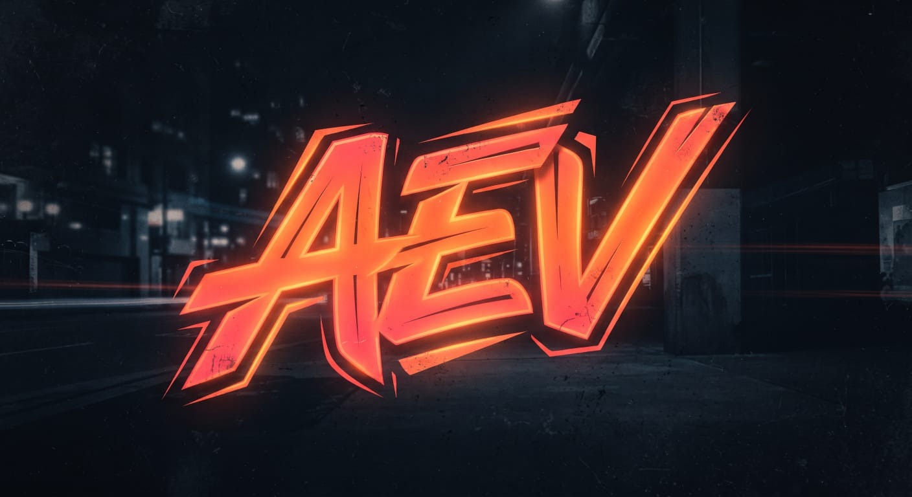

04 / JÓVENES EBENEZER
Una generación
con propósito.
Un espacio para conversar sin máscaras, adorar con libertad y descubrir juntos cómo seguir a Jesús.
SÁBADOS · 6:00 PM
Plenarias que nos mueven.
Nos reunimos para escuchar una palabra, hacer preguntas y vivir una fe que también tiene lugar en la vida cotidiana.

EVENTO ANUAL · CADA DICIEMBRE
AEV
Una experiencia juvenil para celebrar, conectar y compartir la fe con toda la energía de una nueva generación.
ConciertosMomentos de música y celebraciónSorteosRegalos y sorpresas para compartirTalleresEspacios prácticos para aprender y crear
Conoce AEV VEN A CONOCERNOS